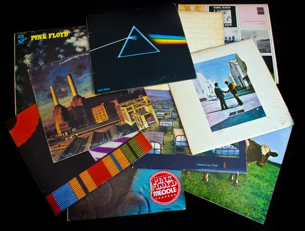

Discography

The discography of the English rock group Pink Floyd consists of 15 studio albums, 12 compilation albums, 6 box sets, 3 EPs, and 27 singles.
The group have sold over 250 million records worldwide, including 75 million in the United States.